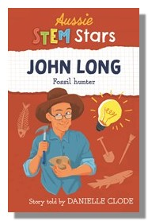

John Long: Fossil Hunter
Part of the Aussie Stem Stars Series
Have you ever wanted to be a palaeontologist? Do you love looking for fossils or learning about prehistoric creatures? So did John Long. Find out what it took to turn a childhood passion into a lifelong career.
When John Long was seven years old, he found his first fossil on a beach in Melbourne. From collecting fossils with his cousin Tim Flannery, John has become a world authority on the ancient Devonian fish and the ancestors of land-dwelling vertebrates. John's remarkable career has taken him to the frozen wastes of Antarctica, to the Kimberly ranges of Western Australia and the tropical forests of Thailand. He's worked with the police to help stamp out fossil trafficking and named hundreds of new fossil species.
Suited for 10-13 year olds, this book reveals the challenges and achievements of a career in science as part of the Aussie Stem Stars series. Perfect for schools, libraries and science-loving kids
Published by Wild Dingo Press
Available in paperback and in bundles.
Available from all good bookstores
Find your local bookstore Buy now Aust/NZFurther links
Read a sample of the book here
Watch a video of an interview between John Long and Danielle Clode
Listen to Danielle read a chapter of the book
Book Danielle to visit your school through Becky's Literary Bookings (SA) or Booked Out (Vic)